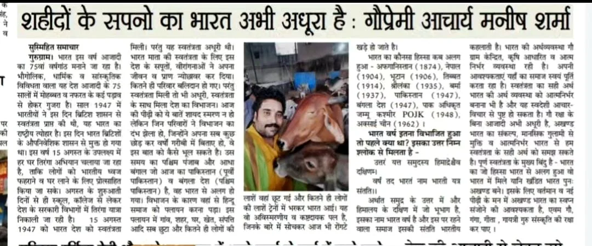

“धर्म, अर्थ, काम व मोक्ष का द्वार है गौमाता।”
प्रेस में
प्रेस ने पहुँचाया यह संदेश।
वर्षों से हरियाणा और दिल्ली के हिंदी दैनिक गौ सेवा, सनातन संस्कृति और भारतीय परंपरा पर आचार्य जी के विचार प्रकाशित करते रहे हैं।

चुनिंदा कवरेज
शब्द जो छपकर पहुँचे।
हम उन पत्रकारों और प्रकाशनों के आभारी हैं जिन्होंने इस कार्य को व्यापक पाठकों तक पहुँचाया। नीचे प्रकाशित कवरेज से अंश दिए गए हैं। पूरे लेख उनके संबंधित प्रकाशनों की संपत्ति हैं।
विशेष
“गाय हमारी संस्कृति, सनातन हमारे प्राण।”
इस पर चिंतन कि गौ माता भारतीय संस्कृति के केंद्र में क्यों हैं — केवल प्रतीक के रूप में नहीं, बल्कि जीवंत संबंध के रूप में।
“गोसेवा राष्ट्र सेवा का सर्वश्रेष्ठ माध्यम।”
“भारतीय गौ धन को संरक्षित करने का संकल्प ही हमारा लक्ष्मी पूजन।”
“जन्म-जन्म का नाता है, गाय हमारी माता है।”
“गाय के प्रति पशु बुद्धि नहीं, ईश भाव आवश्यक।”
“गोसेवा केवल दान नहीं, जीवन जीने का मार्ग है।”
संग्रह से
सहेजे हुए पन्ने।


कतरनें संदर्भ के लिए पुनः प्रस्तुत हैं। कॉपीराइट मूल प्रकाशनों के पास है। शीर्षक संपादकीय टिप्पणी के लिए संक्षेप में उद्धृत हैं। प्रकाशनों के नाम और तिथियाँ सत्यापन के बाद जोड़ी जाएँगी।
पत्रकारों के लिए
मीडिया किट।
परिवार के बारे में
श्री सुरभि कृपा परिवार गुरुग्राम, हरियाणा में स्थित श्रद्धालुओं का एक प्रयास है। गोप्रेमी आचार्य मनीष हरि जी से प्रेरित यह परिवार गौ माता की देखभाल, सनातन संस्कृति के संरक्षण और समाज की सेवा को समर्पित है।
मीडिया संपर्क
साक्षात्कार, तस्वीरों या पृष्ठभूमि के लिए shreesurbhikripapariwar@gmail.com पर लिखें।
मीडिया पूछताछ
गौ सेवा पर लिख रहे हैं?
संदर्भ, उद्धरण और स्वीकृत तस्वीरों में हमें सहायता करते हुए प्रसन्नता होगी।